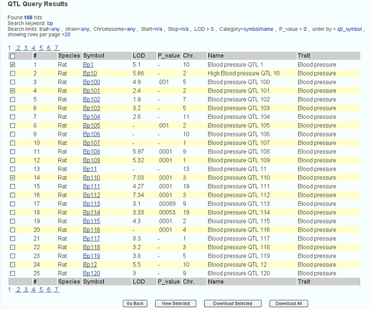
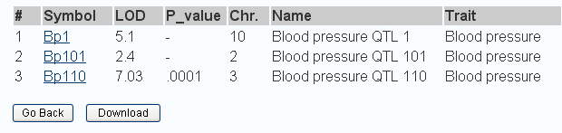
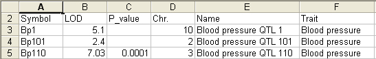

Enter a QTL symbol, alias or keyword. This tool will search the QTL symbol, name and alias (synonym) fields in the database. The asterisk '*' is an accepted wildcard. In addition, various other options are available to refine the search (See below).
Search for QTLs based on your keyword matching curated annotations. These include free text and controlled vocabulary (Disease and Phenotype ontologies). When searching ontologies the terms' synonyms and descendant terms will also be searched.
Restrict the returned QTLs to those detected for a particular phenotypic trait. The traits currently listed are those reported by the researcher in the publication. A controlled vocabulary to describe these more uniformly is under development.
Restrict the returned QTLs to those detected using a particular strain.
Restrict the returned QTLs to ones mapped to a particular chromosome. The limit may also include the start and stop coordinates on the genome assembly version listed next to the input boxes.
Limit to QTLs with LOD score greater than
Restrict the returned QTLs to those with a reported LOD score of greater than the value provided.
LLimit to QTLs with P-value greater than 0 and less than 1
Restrict the returned QTLs to those with a reported P-value of less than the value provided, but between 0 and 1.
Indicates the number of hits that are returned on the first results page.
The result page also lists the parameters that were used to query the database.
After you submit a query, a results page is generated displaying content related to your given search parameters. Examples of a Query Result, Select Items Report and Downloadable Report are given below.
There are several functions provided on the results page that allow the user to easily navigate through detailed information about the objects that match the search criteria.
QTL Query Results Page Example:

Selected Items Report Example:

The file can be saved as an Excel file by clicking on the File button in the upper left corner of the web browser window and saved by selecting Save as type: Microsoft Excel Workbook.
